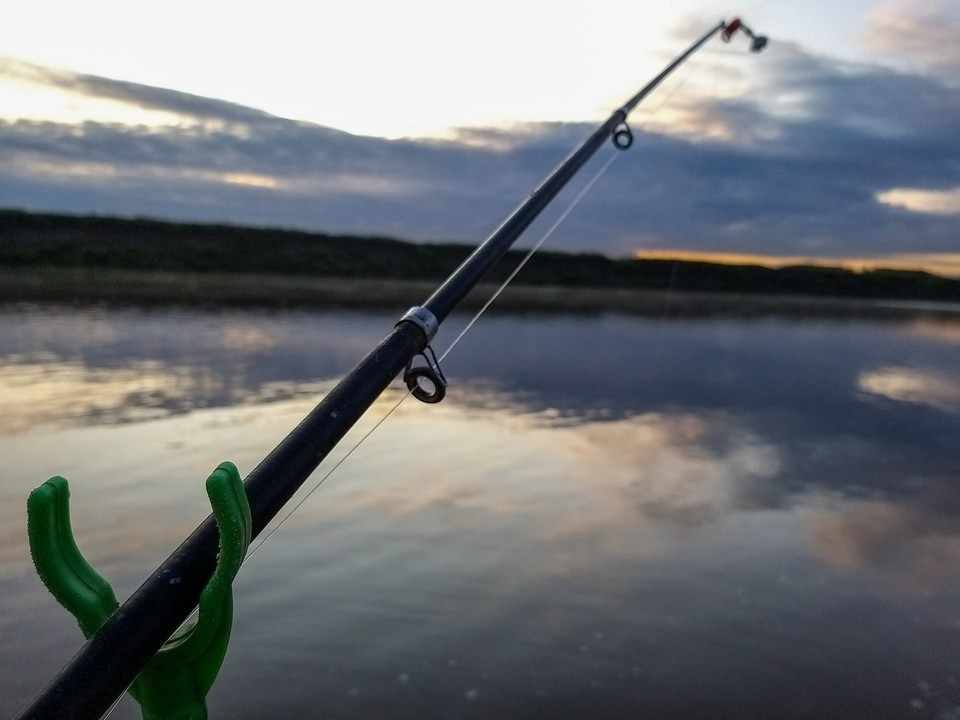
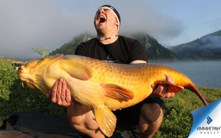

Лучшие мировые снасти для ловли рыбы сейчас доступны каждому российскому рыбаку от любителя до профессионала. В каждом городе, в каждом населенном пункте можно купить и опробовать спиннинги, катушки, фидерные и матчевые удилища, плетеную леску, воблеры, попперы, планеры, даунригеры, волкеры, стримеры и пилькеры и многое другое. Наш сервис "Рыболовные обзоры" направлен на формирование рейтинга снастей, платных водоемов и рыболовных баз, которые формируются на пользовательских обзорах, мнении и оценках. В этом разделе вы найдете: обзоры спиннингов и удилищ, обзоры лодок, обзоры катушек, обзоры платников (платные водоемы), обзоры рыболовных баз. Нужны новые разделы для обзоров? Напишите в треккере о новой категории и мы рассмотрим внедрение дополнительных разделов.

В нашем онлайн-каталоге представлен огромный спектр рыболовных товаров, туристического снаряжения и аксессуаров. Ассортимент включает более сотни брендов различных бюджетных категорий.
В общем, вы можете купить всё для рыбалки и активного отдыха на природе, не выходя из дома! Мы доставляем наши товары различными способами в Москву и другие регионы и даже страны!
Spinningline – это не только рыболовный интернет-магазин, это крупный портал для общения, обмена опытом. Вы можете задать вопрос эксперту, посоветоваться с другими рыболовами, посмотреть обзоры снастей и поделиться успехами в своем блоге.
Структура каталога позволяет быстро подобрать интересующие товары. Удобный интерфейс и интуитивно понятное управление помогут быстро узнать всё о выбранном товаре, а если вопросы всё-таки останутся, то вам всегда поможет наш онлайн-консультант.
